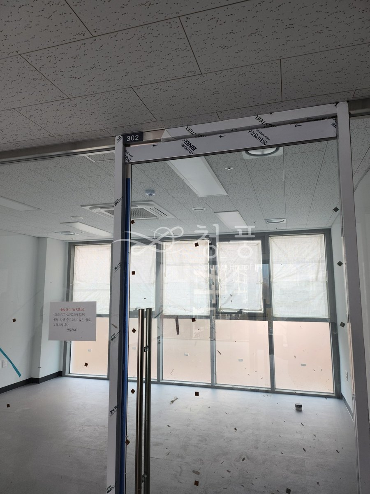
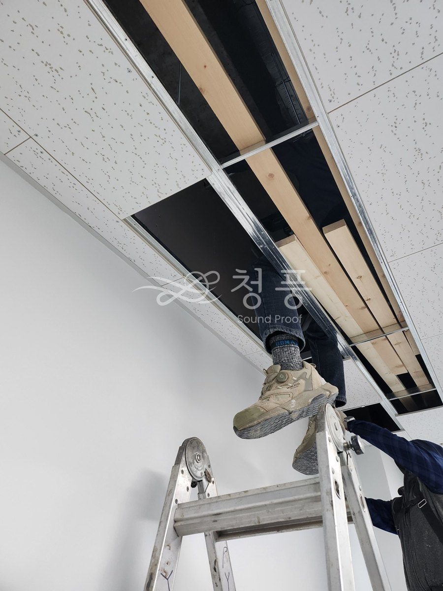
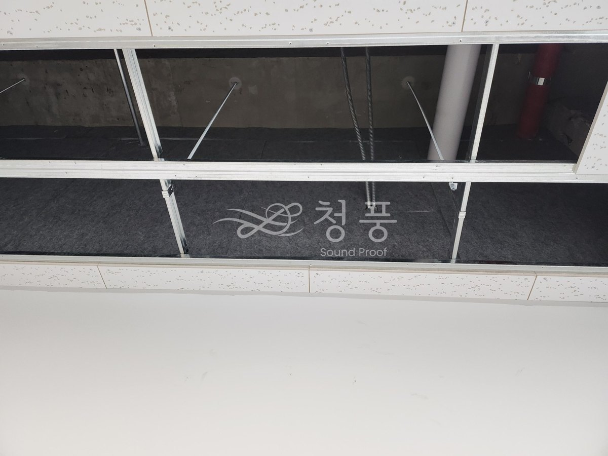
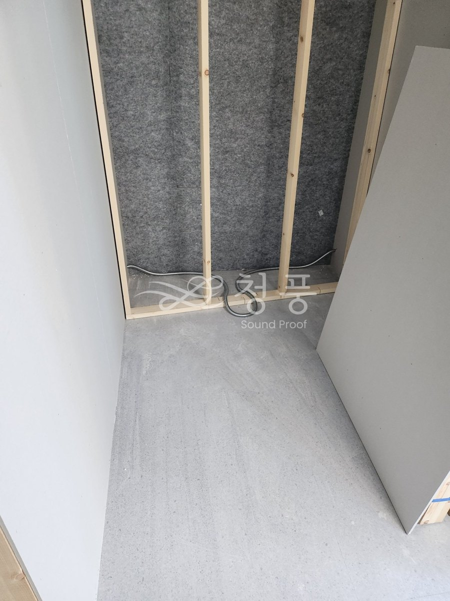
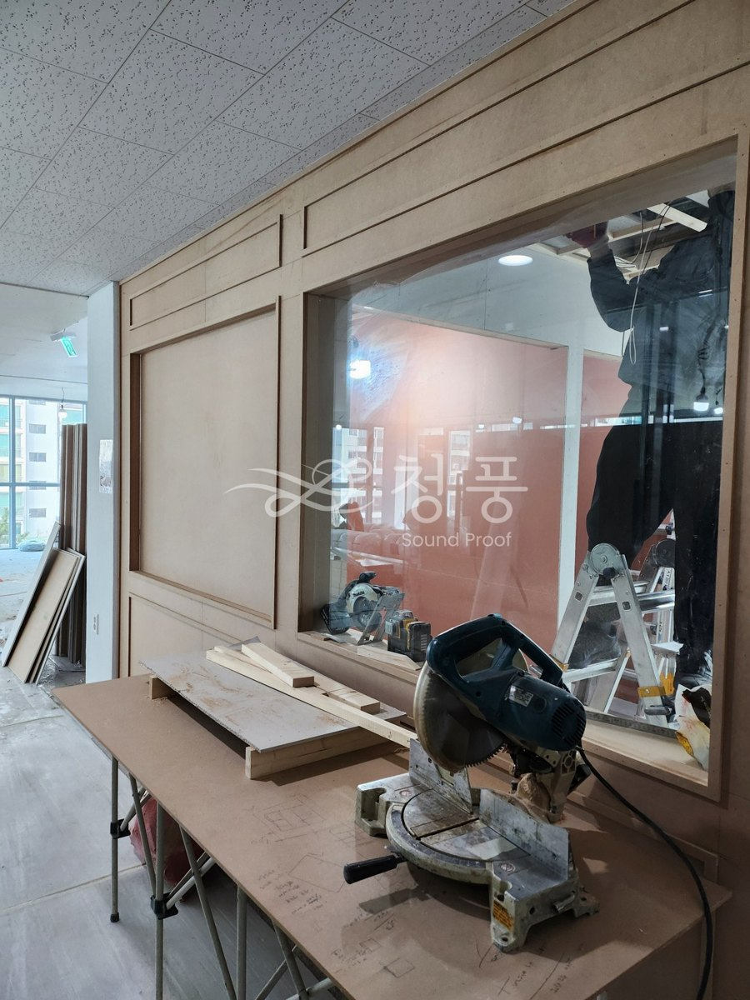
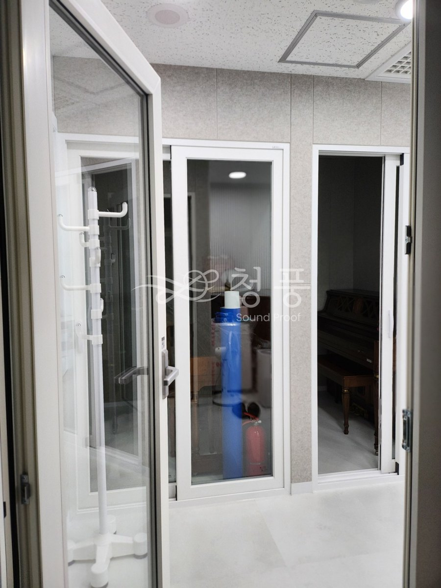
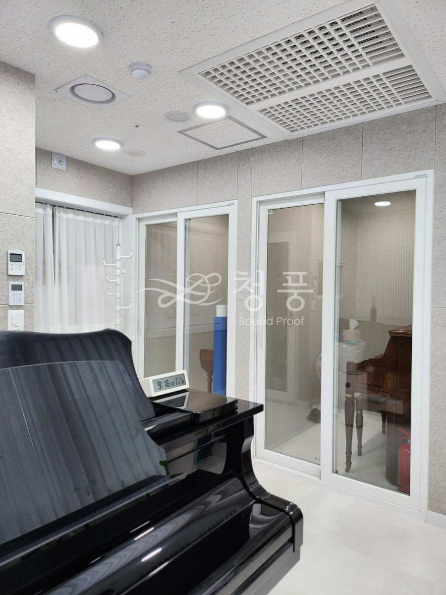
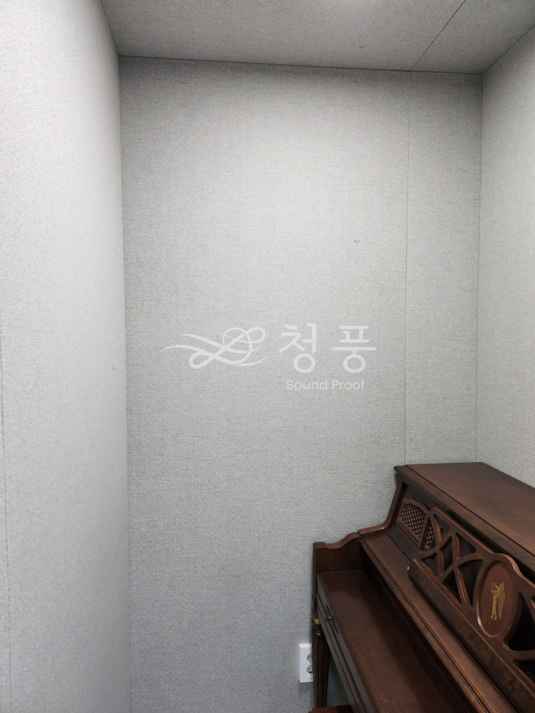

서울 서초 잠원동 · 신반포스퀘어
복도에서 전실을 거쳐 홀로 들어가는 구조입니다. 전실 벽도 흡음으로 마감하고 홀이 보이는 방음시창을 냈습니다. 레슨실은 석고보드 두 겹 양면 칸막이로 새로 세웠고, 벽만으로는 막히지 않는 천장 속 경계벽까지 같이 막았습니다. 교습소는 학부모님이 밖에서 수업을 보시는 일이 많아 레슨실마다 방음시창을 넣었습니다.








벽만 막으면 소리는 천장으로 넘어갑니다. 상가 호실은 대부분 벽이 천장 마감선에서 끝나고 그 위 천장 속은 옆 호실과 뚫려 있습니다. 이 현장도 그랬습니다. 눈에 보이지 않는 공사라 빠지기 쉬운데, 빠뜨리면 완공한 뒤에 옆집에서 연락이 옵니다.
방음문은 새것이 아닙니다. 원장님이 전에 쓰시던 자리에서 23T 시스템 방음문을 떼어 와 옮겨 달았습니다. 같이 떼어 온 나머지 한 짝은 같은 상가의 바이올린 교습소로 갔습니다. 시스템 방음문은 문짝과 문틀이 멀쩡하면 몇 번이든 다시 쓸 수 있습니다.
문의
010-4867-4442
실측과 상담은 비용을 받지 않습니다. 방음문 한 짝 교체는 99만원부터이고, 기존 문 철거는 별도입니다.
상담부터 시공까지 보통 2~3주.
상담 → 실측 → 제작 → 일정 조율 → 시공 순서로 갑니다.
방음문은 치수를 받아 만드는 제품이라 대부분의 시간이 제작 기간입니다.